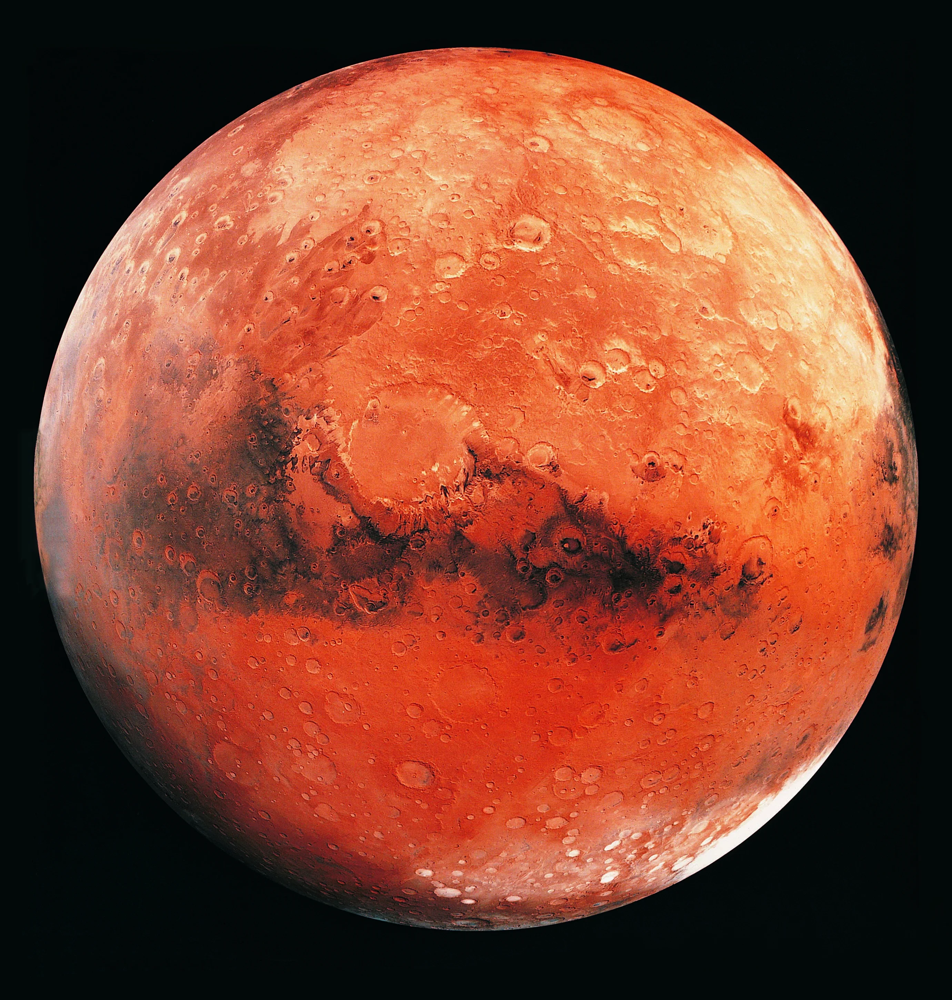

Mars
Mars merupakan planet keempat dari Matahari sekaligus planet terestrial terluar di Tata Surya. Dikenal sebagai "Planet Merah" akibat dominasi besi(III) oksida (hematit) di permukaannya, Mars memiliki karakteristik geologis yang sangat bervariasi, termasuk gunung berantai vulkanik terbesar di Tata Surya (Olympus Mons) dan sistem ngarai raksasa (Valles Marineris). Atmosfer Mars sangat tipis dan didominasi oleh karbon dioksida, yang menghasilkan tekanan permukaan sangat rendah (~0,006 atm relatif terhadap Bumi). Mars tidak memiliki medan magnet global intrinsik saat ini, melainkan hanya sisa-sisa kemagnetan kerak, sehingga atmosfernya tererosi secara terus-menerus oleh angin surya. Mars dikelilingi oleh dua satelit alami kecil berbentuk tak beraturan, yaitu Phobos dan Deimos, yang diduga merupakan asteroid terperangkap.